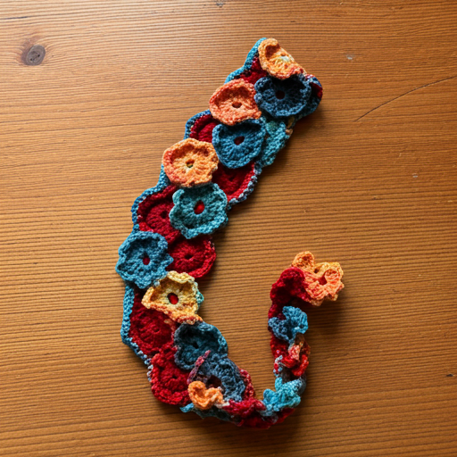

Overview
Purpose
My purpose is to share crafts I have enjoyed in the past and to showcase current and future projects. I hope to inspire joy and foster a sense of community among fellow crafters.
Audience
The audience includes crafters of all levels, primarily women who appreciate visually appealing and functional design.
Dynamic Elements
The site will feature collapsible menus for different craft categories and a beginner-friendly random craft generator.
Featured Craft
Check out our latest featured project: a crochet flower bookmark!
